Meddbase allows booking meetings outside of appointments during clinician's normal working schedule, and add clinicians, and non-medical staff as attendees.
This helps to:
Click here for more details on Working with Meetings.
Click here for more details on Booking & managing Online Meetings.
It is now possible to book meetings that recur according to a particular schedule. This article describes the additional functionality and related configuration, including:
Editing the meeting, adding attendees and saving the meeting on the 'Book a meeting' page.
When booking a meeting (via Calendar, Clinician's Diary or Room) the Meeting Booking page will display a checkbox allowing a user to set a recurring schedule for the meeting.
In this article we will book the meeting via Calendar or Clinician's Diary, as follows:
This opens the Set recurring schedule dialog and allows defining the below options:
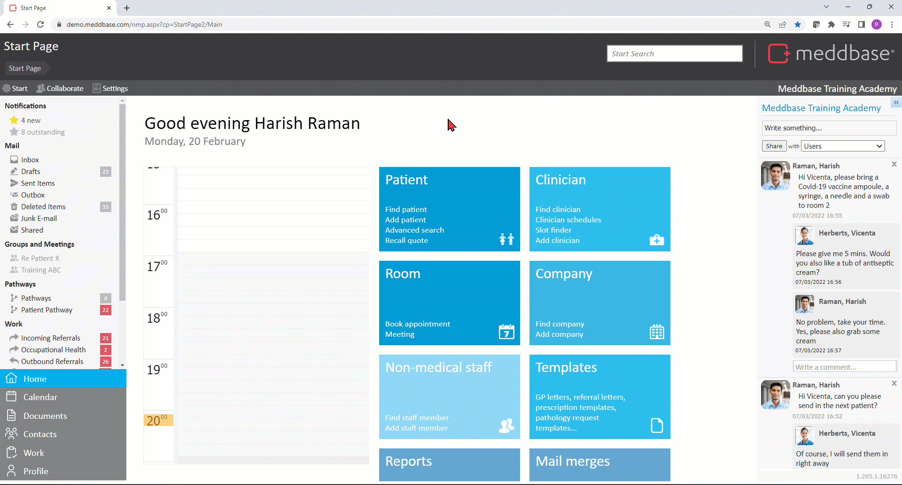
This opens the Set recurring schedule dialog allowing setting the meeting recurrence options:
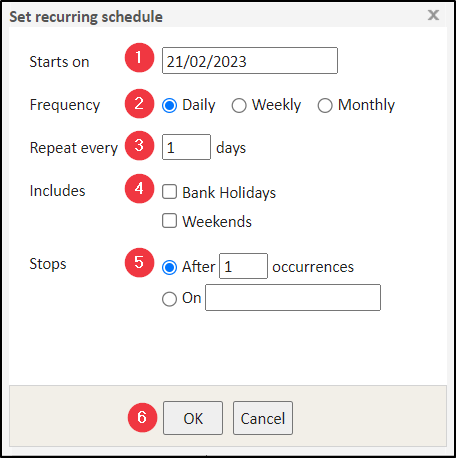
1. Starts on - the first date (DD/MM/YYYY) for the meeting series. This, by default, reflects the date of the slot clicked in the calendar or Clinician's Diary, but can be overridden.
2. Frequency - this section allows setting the frequency of the meeting recurrence to:
Selecting weekly frequency allows picking the days of the week (Monday to Sunday) the weekly meeting will repeat on.
Consider the below example setup, where the meeting will recur every 1 week on Mondays, Wednesdays and Fridays. 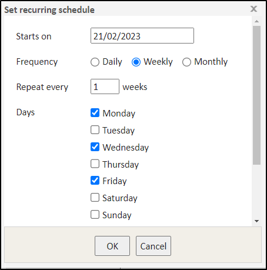
*When attempting to set meeting recurrence with invalid/mutually exclusive criteria, e.g. book First Saturday of the month, but do not include weekends (see point 4), will result in a 'Problem' message being displayed on screen.
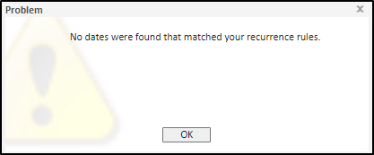
Consider the below example setup, where the meeting will recur every 1 month on the First Tuesday of the month, Last Friday of the month and every 15th of the month.
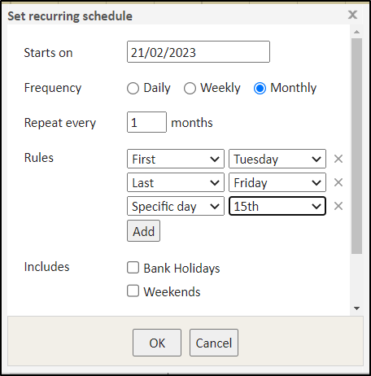
3. Repeat every - set to 1 by default, meaning the selected Frequency will apply every 1 day, 1 week or 1 month accordingly. The default value can be changed, e.g. if set to 2 the selected Frequency will apply every 2 days, 2 weeks or 2 months accordingly.
4. Includes
Both checkboxes can be ticked simultaneously. When setting weekly frequency and selecting Saturday and/or Sunday, the 'Includes Weekends' checkbox becomes obsolete.
5. Stops - this section allows setting a time frame for the meeting recurrence, so that it does not recur indefinitely
*The maximum number of meeting recurrences is 2000. Setting a higher value will result in a 'Problem' message being displayed on screen.
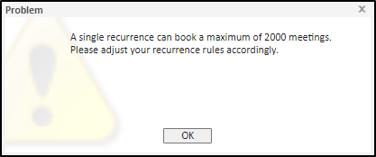
6. OK - clicking this button saves the meeting recurrence configuration and takes you back to the Book a meeting dialog.
Once back to the 'Book a meeting' page you can edit the meeting setup, add attendees and finally save the meeting.
To edit the meeting on the 'Book a meeting' page:
To edit the meeting on the 'Book a meeting' page:
Once ready, click Save on the 'Book a meeting' page.
If the meeting recurrence pattern is set such that no dates fall within it, then a single meeting is booked on the date set in the booking dialog.
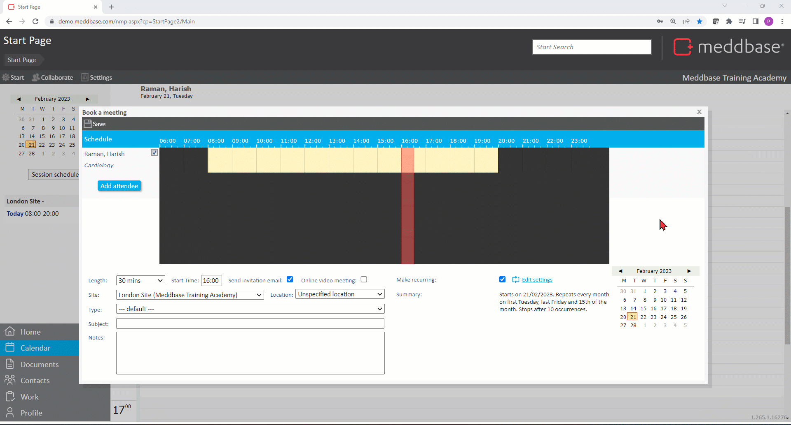
If the system identifies any conflicts in the scheduling of the meeting with other meetings with respect to attendee or location, a Confirm Save pop-up appears upon saving the meeting.
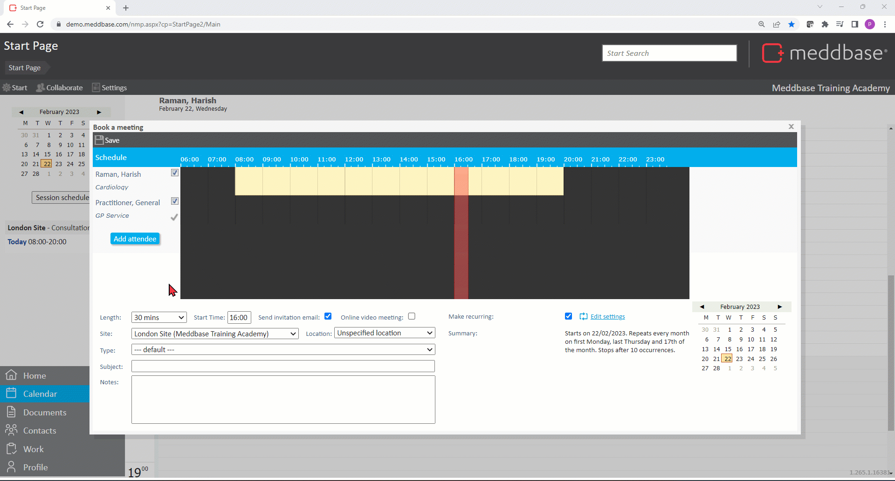
The Confirm save dialog provides information and options:
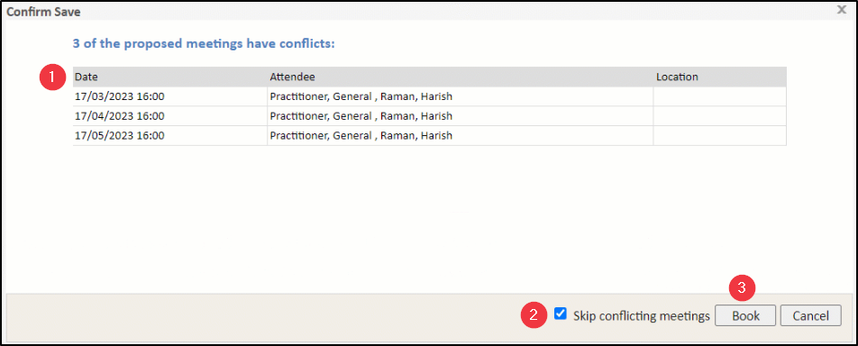
Clicking on a Meeting block on a calendar timeline opens the Meeting Collaboration page where details of the meeting series can be viewed and edited.
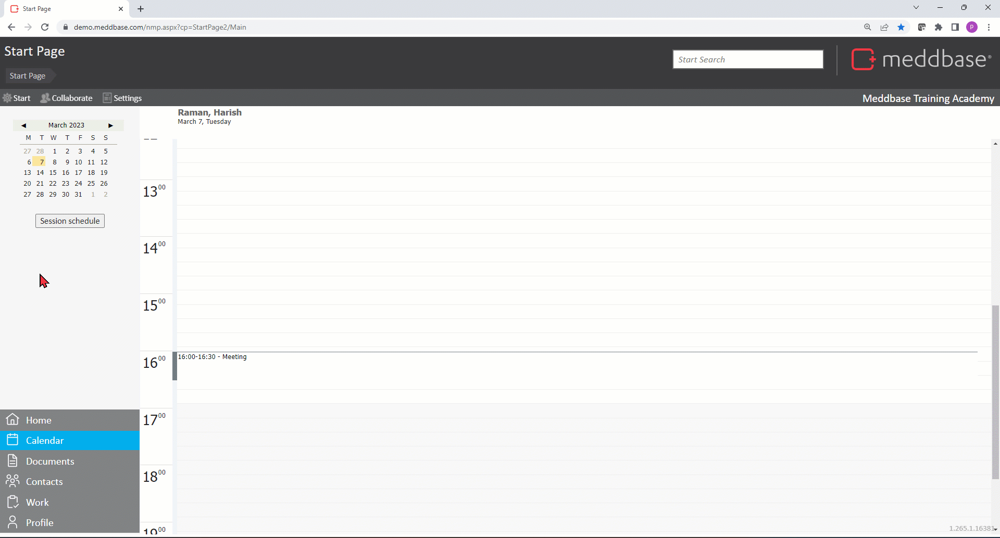
The top action bar of the collaboration page includes a Meeting button. Clicking presents some options:
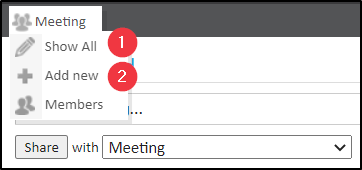
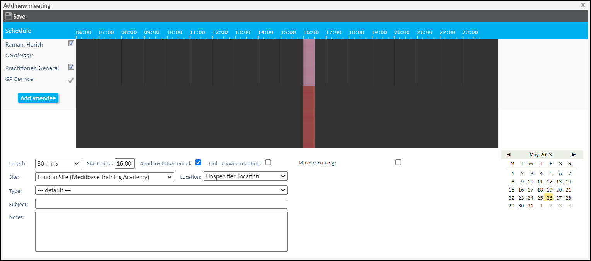
To the left hand side of the collaboration page which can show up to 11 meetings and additional options:
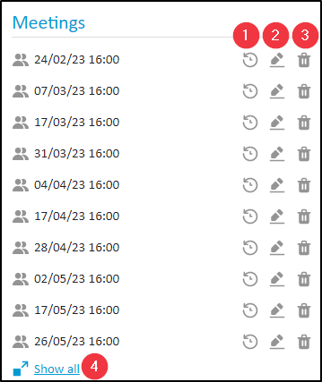
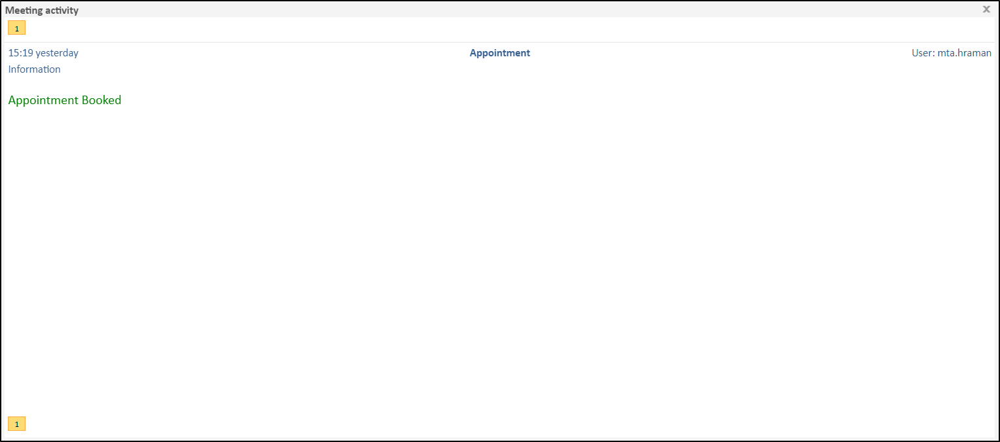
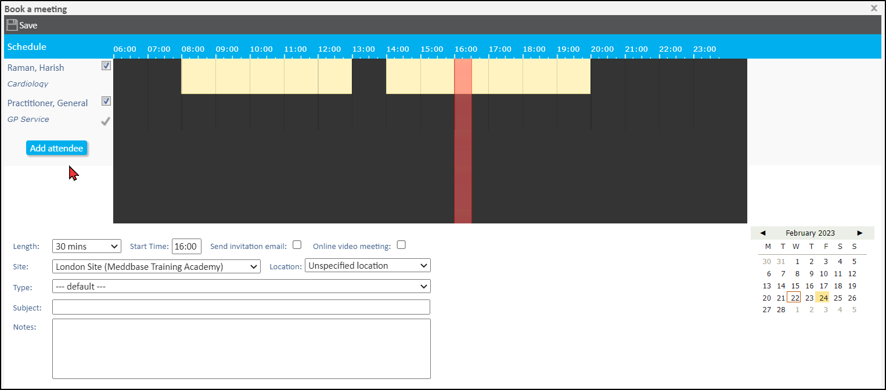
Clicking Show all presents a table that list of all the meetings in this series.
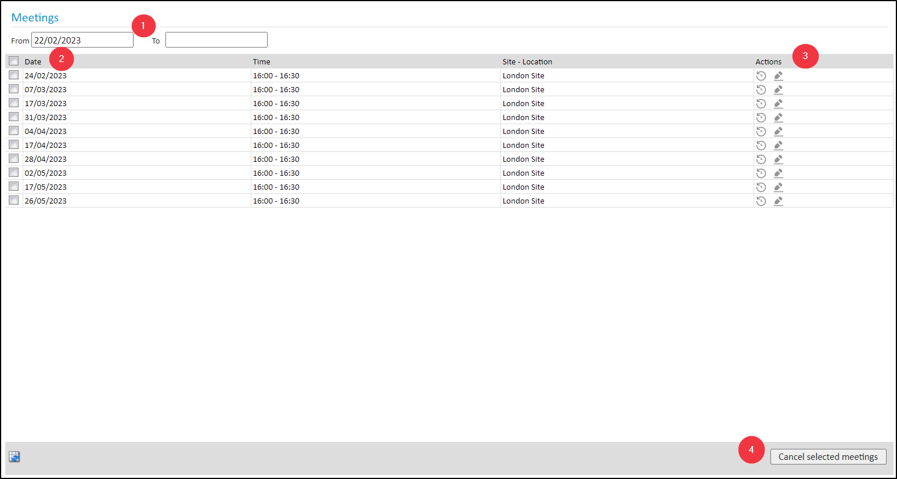
1. Text fields - these fields allow you to provide a From - To date range and view meetings in the series accordingly.
2. Checkboxes - these checkboxes allows you to multiselect meetings in the series. The top checkbox allows you to Select/Deselect All. You can subsequently Cancel meetings in bulk.
3. Edit a meeting in the series - the button opens the Book a meeting dialog for the given meeting where it can be amended* and saved.
*If the meeting being edited is in the future, the subject, notes and telemedicine settings apply to all the meetings after now. If the meeting being edited is in the past, then subject, notes and telemedicine settings apply to all meetings after that meeting. Other settings of the meeting such as time, length etc only apply to the meeting being edited.
4. Cancel selected meetings - this button allows cancelling the selected meetings in bulk.
When adding recurring meetings, an invitation email for the first meeting is sent to all attendees. The content of the email is same as it would be for a non-recurring meeting. When editing a meeting in the series, an email with the new details of that meeting is sent.
The attendee can also use the Leave meeting button available in the received email. When an attendee leaves the meeting they are removed as attendee from all the meetings as well as collaborator from the network.
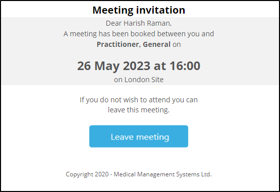